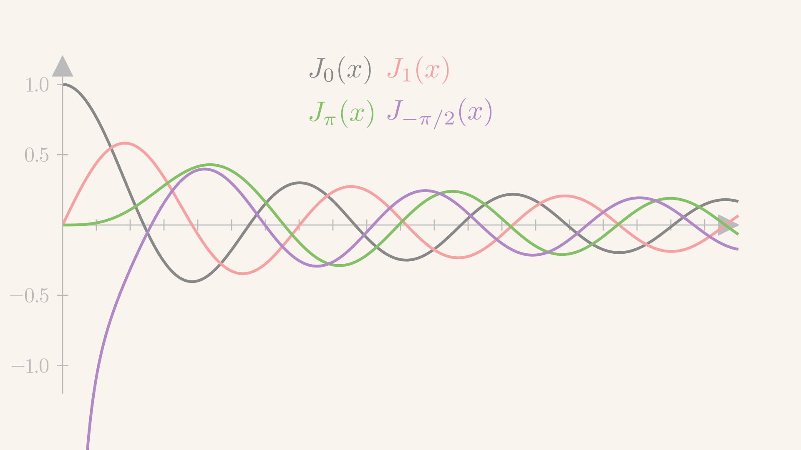
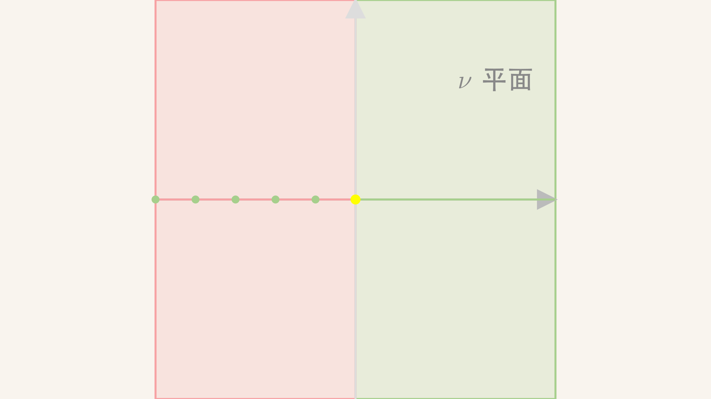
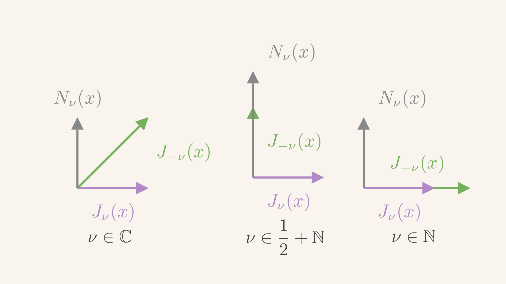
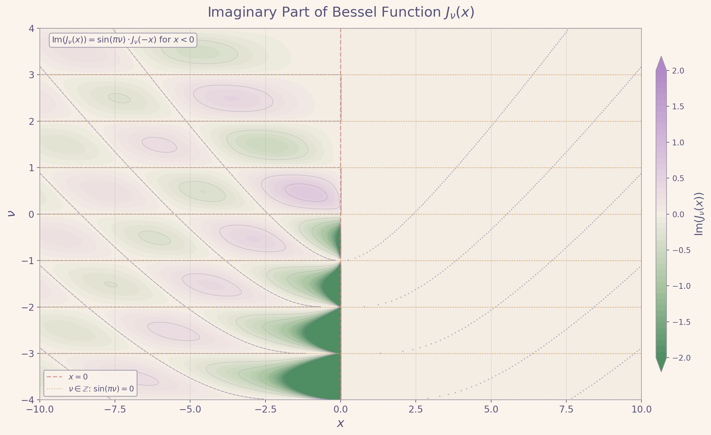
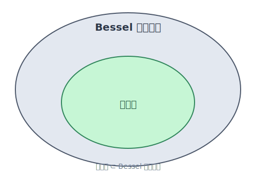
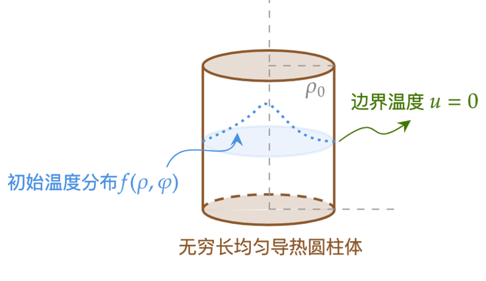
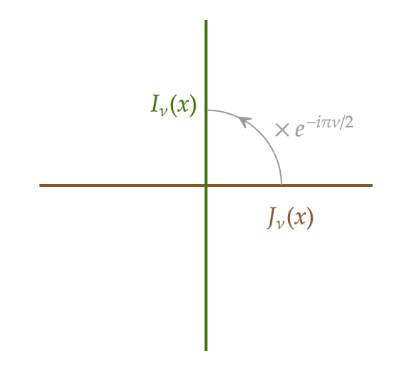

\gdef\red#1{{\color{cb8680}{#1}}} \gdef\green#1{{\color{4f8d63}{#1}}} \gdef\gray#1{{\color{gray}{#1}}} \gdef\purple#1{{\color{B189C6}{#1}}} \gdef\orange#1{{\color{dfa04b}{#1}}} \gdef\white#1{{\color{white}{#1}}}
柱坐标 (ρ,φ,z)(\rho, \varphi, z)(ρ,φ,z)：径向坐标 (ρ,z)(\rho, z)(ρ,z)，角向坐标 φ\varphiφ
Laplace 方程分离径向 (ρ,z\rho, zρ,z)与角向 (φ\varphiφ)：第一分离常数 μ\muμ
1Rρddρ(ρdRdρ)−μρ2=−1Zd2Zdz2d2Φdφ2+μΦ=0\begin{align*} \frac{1}{R\rho} \frac{d}{d\rho} \bigg(\rho \frac{dR}{d\rho}\bigg) - \frac{\green{\mu}}{\rho^2} = - \frac{1}{Z}\frac{d^2 Z}{dz^2} \qquad \frac{d^2\Phi}{d\varphi^2} + \mu \Phi = 0 \end{align*} Rρ1dρd(ρdρdR)−ρ2μ=−Z1dz2d2Zdφ2d2Φ+μΦ=0
分离两个径向 RRR 与 zzz (第二分离常数 λ\lambdaλ)
1ρddρ(ρdRdρ)−m2ρ2R= −λRd2Zdz2= +λZ\begin{align*} \frac{1}{\rho} \frac{d}{d\rho} \left({\rho \frac{dR}{d\rho}}\right) - \frac{m^2}{\rho^2} R = & \ - \green{\lambda} R \\ \frac{d^2 Z}{dz^2} = & \ + \green{\lambda} Z \end{align*} ρ1dρd(ρdρdR)−ρ2m2R=dz2d2Z= −λR +λZ
λ\lambdaλ 一定程度上刻画 zzz 方向的平移不变性：Z(z)=Az+BZ(z) = Az + BZ(z)=Az+B，其中 Z(z)=BZ(z) = BZ(z)=B 的部分刻画了平移不变的成分。
记 x=λρx = \sqrt{\lambda}\rhox=λρ，y(x)=R(ρ)y(x) = R(\rho)y(x)=R(ρ)
y′′+1xy′+(1−m2x2)y=0y'' + \frac{1}{x}y' + \bigg(1 - \frac{m^2}{x^2}\bigg) y = 0 y′′+x1y′+(1−x2m2)y=0
作为“径向坐标”，x>0x > 0x>0
柱坐标分离变量 不是 Bessel 方程的唯一来源，也可以来自一维线性势能的薛定谔方程等其他问题：此时 xxx 不再具有“径向坐标”的物理意义，原则上 xxx 可正可负
分离变量
柱坐标分离变量的分离常数是 λ,μ\lambda, \muλ,μ
但是在 Bessel 方程中，非零的 λ\lambdaλ 被吸收到了自变量 xxx 的定义中，并没有显式出现
但 λ\lambdaλ 会受到 x≠0x \ne 0x=0 处的物理边界条件约束
当 λ=0\lambda = 0λ=0，
ρddρ(ρdRdρ)=m2R⇒R~(t)=R(ρ)ρ=etddtddtR~(t)=m2R~(t)\rho\frac{d}{d\rho}\bigg(\rho \frac{dR}{d\rho}\bigg) = m^2 R \qquad \xRightarrow[\tilde R(t) = R(\rho)]{\rho = e^t} \qquad \frac{d}{dt}\frac{d}{dt}\tilde R(t) = m^2 \tilde R(t) ρdρd(ρdρdR)=m2Rρ=etR~(t)=R(ρ)dtddtdR~(t)=m2R~(t)
线性独立解可以分情况讨论：
{R~(t)=e±mtm>0R~(t)=const,tm=0⇒{R(ρ)=ρ±mm>0R(ρ)=const,lnρm=0\begin{cases} \tilde R(t) = e^{\pm m t} & m > 0\\ \tilde R(t) = \text{const}, t & m = 0 \end{cases} \quad\Rightarrow\quad \begin{cases} R(\rho) = \rho^{\pm m} & m > 0\\ R(\rho) = \text{const}, \ln\rho & m = 0 \end{cases} {R~(t)=e±mtR~(t)=const,tm>0m=0⇒{R(ρ)=ρ±mR(ρ)=const,lnρm>0m=0
y′′+1xy′+(1−ν2x2)y=0y'' + \frac{1}{x}y' + \bigg(1 - \frac{\nu^2}{x^2}\bigg) y = 0 y′′+x1y′+(1−x2ν2)y=0
上述 ν\nuν-阶 Bessel 方程属于 Sturm-Liouville 型方程，求解区间是 (0,∞)(0, \infty)(0,∞)
k(x)=x,q(x)=ν2x,ρ(x)=xk(x) = x, \qquad q(x) = \frac{\nu^2}{x}, \qquad \rho(x) = x k(x)=x,q(x)=xν2,ρ(x)=x
作为 Sturm-Liouville 问题，本征值被选定为 =1= 1=1
ν\nuν 不是本征值：ν\nuν 由角向 (φ\varphiφ) 边界条件决定，不管 ν\nuν 是多少，都可以获得两个线性独立解 (Fuchs 定理)
额外考虑自然边界条件 ∣y(0)∣<∞|y(0)| < \infty∣y(0)∣<∞ 可以排除一个解；哪一个？
第一解：y(1)(x)=∑n=0+∞ynxn+s1\small{第一解}：\purple{\boldsymbol{y_{(1)}(x)}} = \sum_{n = 0}^{+\infty} y_n x^{n + s_1} 第一解：y(1)(x)=n=0∑+∞ynxn+s1
第二解：y(2)(x)=∑n=0+∞yn′xn+s2+βy(1)(x)ln(x)⏟对数项\small{第二解}：y_{(2)}(x) = \sum_{n = 0}^{+\infty} \red{y'_n} x^{n + s_2} + \underbrace{\beta \purple{\boldsymbol{y_{(1)}(x)}} \ln(x)}_{对数项} 第二解：y(2)(x)=n=0∑+∞yn′xn+s2+对数项βy(1)(x)ln(x)
s2=ν2⇒s1=+ν,s2=−ν,Reν≥0s^2 = \nu^2 \qquad \Rightarrow \qquad s_1 = +\nu, \quad s_2 = -\nu, \qquad \operatorname{Re}\nu \ge 0 s2=ν2⇒s1=+ν,s2=−ν,Reν≥0
当 Reν>0\operatorname{Re}\nu > 0Reν>0，有 Res1>0\operatorname{Re}s_1 > 0Res1>0，从而
y(1)(x)=∑n=0+∞ynxn+s1→ x→0 0y_{(1)}(x) = \sum_{n = 0}^{+\infty} y_n x^{n + s_1} \xrightarrow{~x \to 0~} 0 y(1)(x)=n=0∑+∞ynxn+s1 x→0 0
当 Reν>0\operatorname{Re}\nu > 0Reν>0，有 Res2<0\operatorname{Re}s_2 < 0Res2<0
y(2)(x)=∑n=0+∞yn′xn+s2+βy(1)(x)ln(x)⏟对数项→x→0∞y_{(2)}(x) = \sum_{n = 0}^{+\infty} \red{y'_n} x^{n + s_2} + \underbrace{\beta \purple{\boldsymbol{y_{(1)}(x)}} \ln(x)}_{对数项} \xrightarrow{x \to 0} \infty y(2)(x)=n=0∑+∞yn′xn+s2+对数项βy(1)(x)ln(x)x→0∞
第一项发散，第二项 (如果存在) 也发散：总是被自然边界条件排除
y(1)(x)=Jν(x)=∑k=0+∞(−1)kk!Γ(k+ν+1)(x2)2k+νy_{(1)}(x) = J_\nu(x) = \sum_{k = 0}^{+\infty} \frac{(-1)^k }{k! \Gamma(k + \nu + 1)} \bigg(\frac{x}{2}\bigg)^{2k + \nu} y(1)(x)=Jν(x)=k=0∑+∞k!Γ(k+ν+1)(−1)k(2x)2k+ν
y(2)(x)=Nν(x)=cos(πν)Jν(x)−J−ν(x)sin(πν)y_{(2)}(x) = N_\nu (x) = \frac{\cos (\pi \nu) J_\nu(x) - J_{- \nu}(x)}{\sin (\pi \nu)} y(2)(x)=Nν(x)=sin(πν)cos(πν)Jν(x)−J−ν(x)
第一种 Hankel 函数：Hν(1)(x)≔Jν(x)+iNν(x),\small{\text{第一种 Hankel 函数：}} \green{H^{(1)}_\nu(x) \coloneqq J_\nu(x) + i N_\nu(x)}, 第一种 Hankel 函数：Hν(1)(x):=Jν(x)+iNν(x),
第二种 Hankel 函数：Hν(2)(x)≔Jν(x)−iNν(x)\small{\text{第二种 Hankel 函数：}} \green{H^{(2)}_\nu(x) \coloneqq J_\nu(x) - i N_\nu(x)} 第二种 Hankel 函数：Hν(2)(x):=Jν(x)−iNν(x)
四种函数线性相关：只有 两个 是 线性独立
说明
类似 cosx,sinx,e+ix,e−ix\cos x, \sin x, e^{+ix}, e^{-i x}cosx,sinx,e+ix,e−ix 的相对关系

下面研究 Jν(x)J_\nu(x)Jν(x) 和 Nν(x)N_\nu(x)Nν(x) 的原点渐近行为
先看 ν∈R\nu \in \mathbb{R}ν∈R 时 JνJ_\nuJν 在原点 x=0x = 0x=0 处的行为
其中 ϵ∈(0,1)\epsilon \in (0,1)ϵ∈(0,1)
定理：对于一般的 ν∈C\nu \in \mathbb{C}ν∈C 值，Jν(x)J_\nu(x)Jν(x) 有如下几种原点渐近行为
ν=0: limx→0J0(x)=1Reν>0: limx→0Jν(x)=limx→0J−1,−2,⋯(x)=0Reν < 0 and ν≠0,−1,−2,⋯: limx→0Jν(x)=∞\begin{align*} \nu = 0:& \ \lim_{x \to 0}J_0(x) = 1\\ \operatorname{Re}\nu > 0:& \ \lim_{x \to 0} J_{\nu}(x) = \lim_{x \to 0}J_{-1,-2,\cdots}(x) = 0\\ \operatorname{Re}\nu ~ \red{\boldsymbol{<}} ~ 0~ \text{and}~ \red{\nu \ne 0, -1, -2, \cdots}:& \ \lim_{x \to 0} J_{\nu}(x) = \infty \end{align*} ν=0:Reν>0:Reν < 0 and ν=0,−1,−2,⋯: x→0limJ0(x)=1 x→0limJν(x)=x→0limJ−1,−2,⋯(x)=0 x→0limJν(x)=∞
注意
limν→0limx→0Jν(x)=0,limx→0limν→0Jν(x)=1\lim_{\nu \to 0}\lim_{x \to 0}J_\nu(x) = 0, \qquad \lim_{x \to 0}\lim_{\nu \to 0} J_\nu (x) = 1 ν→0limx→0limJν(x)=0,x→0limν→0limJν(x)=1

不同 ν\nuν 的原点行为: 绿色代表极限为 000，红色代表极限为 ∞\infty∞，黄色代表极限为 111
Jν(x→0)∼1Γ(1+ν)(x2)νJ_\nu(x \to 0) \sim \frac{1}{\Gamma(1 + \nu)} \bigg(\frac{x}{2}\bigg)^\nu Jν(x→0)∼Γ(1+ν)1(2x)ν
(x2)0=1,(x2)Reν+iImν=∣x∣Reνe−(argx)Imνei(...)→0\bigg(\frac{x}{2}\bigg)^0 = 1, \qquad \bigg(\frac{x}{2}\bigg)^{\operatorname{Re}\nu + i \operatorname{Im}\nu} = |x|^{\operatorname{Re}\nu} e^{-(\operatorname{arg}x) \operatorname{Im}\nu} e^{i(...)} \to 0 (2x)0=1,(2x)Reν+iImν=∣x∣Reνe−(argx)Imνei(...)→0
J−m(x→0)=0J_{-m}(x\to 0) = 0 J−m(x→0)=0
Jν(x→0)∼1Γ(1+ν)(x2)ν→∞J_{\nu}(x \to 0) \sim \frac{1}{\Gamma(1 + \nu)}\bigg(\frac{x}{2}\bigg)^{\nu} \to \infty Jν(x→0)∼Γ(1+ν)1(2x)ν→∞
综上，对于 generic ν\nuν：Jν(x)J_\nu(x)Jν(x) 和 J−ν(x)J_{-\nu}(x)J−ν(x) 在原点处具有 截然不同 的行为
Jν(x→0)→0,J−ν(x→0)→∞,Reν>0, 2ν∉ZJ_\nu(x \to 0) \to 0, \qquad J_{-\nu}(x \to 0) \to \infty, \qquad \operatorname{Re}\nu > 0, \ \ 2\nu \not\in \mathbb{Z} Jν(x→0)→0,J−ν(x→0)→∞,Reν>0, 2ν∈Z
generic ν\nuν：JνJ_\nuJν 和 J−νJ_{-\nu}J−ν 的线性独立性
JνJ_{\nu}Jν 满足自然边界条件，J−νJ_{-\nu}J−ν 破坏自然边界条件
柱坐标系分离变量 m≠0m \ne 0m=0 的时候必须 R(ρ→0)=0R(\rho \to 0) = 0R(ρ→0)=0
当 ν=0\nu = 0ν=0，J0(x→0)=1J_0(x \to 0) = 1J0(x→0)=1：同样满足自然边界条件
柱坐标系分离变量 m=0m = 0m=0 的时候要求 R(ρ→0)R(\rho \to 0)R(ρ→0) 有限
定理：NνN_\nuNν 有如下原点渐近行为
Nν(x→0)→∞,Reν≥0N_\nu(x \to 0) \to \infty, \qquad \operatorname{Re} \nu \ge 0 Nν(x→0)→∞,Reν≥0
Nν(x)=cos(πν)Jν(x)−J−ν(x)sin(πν)N_\nu(x) = \frac{\cos (\pi \nu)J_\nu(x) - J_{-\nu}(x)}{\sin (\pi \nu)} Nν(x)=sin(πν)cos(πν)Jν(x)−J−ν(x)

NνN_\nuNν 与 JνJ_\nuJν 总是线性独立，J−νJ_{-\nu}J−ν 则是两边倒
对任意 ν\nuν，Bessel 方程的两个解，只有一个满足 x=0x = 0x=0 处的自然边界条件，另一个在 x=0x = 0x=0 处总是 无穷大
这两个解可以取 {Jν,J−ν}\{J_\nu, J_{-\nu}\}{Jν,J−ν}，或者 {Jν,Nν}\{J_\nu, N_\nu\}{Jν,Nν}，结论都一样
x=0x = 0x=0 端的自然边界条件对 ν\nuν 没有约束力
Jν(x→∞)∼2πxcos(x−πν2−π4)J_\nu(x \to \infty) \sim \purple{\sqrt{\frac{2}{\pi x}}} \cos(\orange{x - \frac{\pi \nu}{2} - \frac{\pi}{4}}) Jν(x→∞)∼πx2cos(x−2πν−4π)
Nν(x→∞)∼2πxsin(x−πν2−π4)N_\nu(x \to \infty) \sim \purple{\sqrt{\frac{2}{\pi x}}} \sin(\orange{x - \frac{\pi \nu}{2} - \frac{\pi}{4}}) Nν(x→∞)∼πx2sin(x−2πν−4π)
Hν(1)(x→∞)∼2πxe+i(x−πν2−π4)H^{(1)}_\nu(x \to \infty) \sim \purple{\sqrt{\frac{2}{\pi x}}} e^{+i(\orange{x - \frac{\pi \nu}{2} - \frac{\pi}{4}})} Hν(1)(x→∞)∼πx2e+i(x−2πν−4π)
Hν(2)(x→∞)∼2πxe−i(x−πν2−π4)H^{(2)}_\nu(x \to \infty) \sim \purple{\sqrt{\frac{2}{\pi x}}} e^{ - i(\orange{x - \frac{\pi \nu}{2} - \frac{\pi}{4}})} Hν(2)(x→∞)∼πx2e−i(x−2πν−4π)
x−πν2−π4\orange{x - \frac{\pi\nu}{2} - \frac{\pi}{4}} x−2πν−4π
2πx\purple{\sqrt{\frac{2}{\pi x}}} πx2
定理：Jν(x)J_\nu(x)Jν(x) 和 Jν′(x)J'_\nu(x)Jν′(x) 在正实轴上有无穷多零点
罗尔中值定理：若 fff 是在 [a,b][a, b][a,b] 上连续，(a,b)(a,b)(a,b) 可导的函数，且 f(a)=f(b)f(a) = f(b)f(a)=f(b)，则在 (a,b)(a, b)(a,b) 上至少有一个点 ccc，使得 f′(c)=0f'(c) = 0f′(c)=0
定理：Jν(x)J_\nu(x)Jν(x) 在 负实轴 上的零点由正实轴上的零点确定，形成对称分布
这是因为 Jν(eπix)=eπiνJν(x)J_\nu(e^{\pi i }x) = e^{\pi i \nu} J_\nu(x)Jν(eπix)=eπiνJν(x)，∀x>0\forall x > 0∀x>0，从而若 x0x_0x0 是 Jν(x0)=0J_\nu(x_0) = 0Jν(x0)=0 的解，则
J(−x0)=eπiνJ(x0)=0J(-x_0) = e^{\pi i \nu}J(x_0) = 0 J(−x0)=eπiνJ(x0)=0
反之依然
ImJν(−x)=sin(πν)Jν(x)\operatorname{Im}J_{\nu}(-x) = \sin(\pi \nu) J_\nu(x) ImJν(−x)=sin(πν)Jν(x)

定理：在四个柱函数 Jν,Nν,Hν(1),Hν(2)J_\nu, N_\nu, H^{(1)}_\nu, H^{(2)}_\nuJν,Nν,Hν(1),Hν(2) 中任取一个 记作 ZνZ_\nuZν，均满足 柱函数递推公式
ddx[xνZν(x)]=xνZν−1,ddx[x−νZν(x)]=−↓x−νZν+1\frac{d}{dx}[\purple{x^\nu Z_\nu(x)}] = \red{x^\nu Z_{\nu - 1}} , \qquad \frac{d}{dx}[\red{x^{-\nu} Z_\nu(x)}] = \purple{\stackrel{\downarrow}{-} x^{-\nu} Z_{\nu + 1}} dxd[xνZν(x)]=xνZν−1,dxd[x−νZν(x)]=−↓x−νZν+1
证明 利用 Jν(x)J_\nu(x)Jν(x) 级数表达式暴力证明，由此也可以证明 Nν(x)N_\nu(x)Nν(x) 也满足相同递推
xνZν(x)=∫xx′νZν−1(x)dx′,x−νZν(x)=−∫xx′−νZν+1(x)dx′x^\nu Z_\nu(x) = \int^x x'^\nu Z_{\nu - 1}(x) dx', \qquad x^{-\nu} Z_\nu(x) = - \int^x x'^{-\nu} Z_{\nu + 1}(x) dx' xνZν(x)=∫xx′νZν−1(x)dx′,x−νZν(x)=−∫xx′−νZν+1(x)dx′
ddx(xJ1(x))=xJ0(x),ddxJ0(x)=−J1(x)\frac{d}{dx}\Big(xJ_1(x)\Big) = xJ_0(x), \qquad\frac{d}{dx}J_0(x) = - J_1(x) dxd(xJ1(x))=xJ0(x),dxdJ0(x)=−J1(x)
推论：JνJ_\nuJν 与 Jν+1J_{\nu + 1}Jν+1 的正零点相间分布
证明
ddx[xν+1Jν+1(x)]=xν+1Jν(x) \frac{d}{dx}[\purple{x^{\nu + 1} J_{\nu + 1}(x)}] = \red{x^{\nu + 1}J_\nu(x)} dxd[xν+1Jν+1(x)]=xν+1Jν(x)
ddx[x−νJν(x)]=−x−νJν+1(x) \frac{d}{dx}[\red{x^{-\nu} J_\nu(x)}] = \purple{- x^{-\nu} J_{\nu + 1}(x)} dxd[x−νJν(x)]=−x−νJν+1(x)
推论：考虑 ν>−1\nu > -1ν>−1，Jν(x)J_\nu(x)Jν(x) 的 最小 正零点比 Jν+1J_{\nu + 1}Jν+1 的 最小正零点更靠左
ν≤−1\nu \le -1ν≤−1
xν+1Jν+1(x)=x0J0(x→0)=1≠0\purple{x^{\nu + 1}J_{\nu + 1}(x)} = \orange{x^0} J_0(x \to 0) = 1 \ne 0 xν+1Jν+1(x)=x0J0(x→0)=1=0
Zν−1+Zν+1=2νxZν,Zν−1−Zν+1=2Zν′Z_{\nu - 1} + Z_{\nu + 1} = \frac{2\nu}{x} Z_\nu, \qquad Z_{\nu - 1} - Z_{\nu + 1} = 2Z_\nu' Zν−1+Zν+1=x2νZν,Zν−1−Zν+1=2Zν′
ddx[xνZν(x)]=xνZν−1,ddx[x−νZν(x)]=−x−νZν+1\frac{d}{dx}[{x^\nu Z_\nu(x)}] = {x^\nu Z_{\nu - 1}} , \qquad \frac{d}{dx}[{x^{-\nu} Z_\nu(x)}] = {- x^{-\nu} Z_{\nu + 1}} dxd[xνZν(x)]=xνZν−1,dxd[x−νZν(x)]=−x−νZν+1
νx−1Zν+Zν′=Zν−1,−↓νx−1Zν+Zν′=−Zν+1\purple{\nu x^{ - 1}Z_\nu} + \red{Z_{\nu}'} = Z_{\nu - 1}, \qquad \stackrel{\downarrow}{-} \purple{\nu x^{ - 1}Z_\nu} + \red{Z_{\nu}'} = - Z_{\nu + 1} νx−1Zν+Zν′=Zν−1,−↓νx−1Zν+Zν′=−Zν+1
2νxZν=Zν−1+Zν+1,2Zν′=Zν−1−Zν+1\red{\frac{2\nu}{x} Z_\nu = Z_{\nu - 1} + Z_{\nu + 1}} , \qquad \green{2Z_\nu' = Z_{\nu - 1} - Z_{\nu + 1}} x2νZν=Zν−1+Zν+1,2Zν′=Zν−1−Zν+1
柱函数是 Bessel 方程的全体解的子集

Bessel 方程的解不一定是柱函数：Z~ν≔νJν(x)\tilde Z_\nu \coloneqq \nu J_\nu(x)Z~ν:=νJν(x) 是 Bessel 方程的解，但 不是 柱函数
定理：柱函数递推关系可以导出 Bessel 方程
νx−1Zν+Zν′=Zν−1,−νx−1Zν+Zν′=−Zν+1(A)\nu x^{ - 1}Z_\nu + Z_{\nu}' = Z_{\nu - 1}, \quad - \nu x^{ - 1}Z_\nu + Z_{\nu}' = - \red{Z_{\nu + 1}} \tag{A} νx−1Zν+Zν′=Zν−1,−νx−1Zν+Zν′=−Zν+1(A)
ν+1xZν+1+Zν+1′=Zν(B)\frac{\nu + 1}{x} \red{Z_{\nu + 1}} + \red{Z'_{\nu + 1}} = \purple{Z_\nu} \tag{B} xν+1Zν+1+Zν+1′=Zν(B)
νx2Zν−νxZν′+Zν′′=−Zν+1′(C)\frac{\nu}{x^2}\purple{Z_\nu} - \frac{\nu}{x}\purple{Z'_\nu} + \purple{Z''_\nu} =- \red{Z'_{\nu + 1}} \tag{C} x2νZν−xνZν′+Zν′′=−Zν+1′(C)
ν+1x(νxZν−Zν′)−(νx2Zν−νxZν′+Zν′′)=Zν\frac{\nu + 1}{x} (\frac{\nu}{x} \purple{Z_\nu} - \purple{Z'_\nu}) - (\frac{\nu}{x^2} \purple{Z_\nu} - \frac{\nu}{x} \purple{Z'_\nu} + \purple{Z''_\nu}) = \purple{Z_\nu} xν+1(xνZν−Zν′)−(x2νZν−xνZν′+Zν′′)=Zν
Zν′′+1xZν′+(1−ν2x2)Zν=0\purple{Z''_\nu} + \frac{1}{x} \purple{Z'_\nu} + (1 - \frac{\nu^2}{x^2}) \purple{Z_\nu} = 0 Zν′′+x1Zν′+(1−x2ν2)Zν=0
整数阶 Bessel 函数的级数表达式：ν=m∈N\nu = m \in \mathbb{N}ν=m∈N
Jm(x)=∑k=0+∞(−1)kk!(k+m)!(x2)2k+mJ_m(x) = \sum_{k = 0 }^{+\infty} \frac{(-1)^k}{k!(k + m)!} \biggl(\frac{x}{2}\biggr)^{2k + m} Jm(x)=k=0∑+∞k!(k+m)!(−1)k(2x)2k+m
关于 mmm 的对称性 J−m(x)=(−1)mJm(x)J_{-m}(x) = (-1)^m J_m(x)J−m(x)=(−1)mJm(x)
对于一般的 ν\nuν，此性质不能推广
关于 xxx 的对称性 Jm(−x)=(−1)mJm(x)J_m(-x) = (-1)^m J_m(x)Jm(−x)=(−1)mJm(x)
生成函数 (generating function)/母函数
exp[z2(t−1t)]=∑m=−∞+∞Jm(z)tm,t∈C−{0}\exp \left[{\frac{z}{2}(t - \frac{1}{t})}\right] = \sum_{m = -\infty}^{+\infty}J_m(z)t^m , \qquad t \in \mathbb{C}-\{0\} exp[2z(t−t1)]=m=−∞∑+∞Jm(z)tm,t∈C−{0}
不做证明。注意求和取遍所有整数 mmm。
给出母函数在 ttt 的环状邻域 0<∣t∣<∞0 < |t| < \infty0<∣t∣<∞ 中的 Laurent 展开
坐标级数有无穷多个 t−mt^{-m}t−m 项说明什么？
∑m=−∞+∞Jm(0)tm=J0(0)t0=e0=1\sum_{m = -\infty}^{+\infty} J_m(0)t^m = J_0(0)t^0 = e^0 = 1 m=−∞∑+∞Jm(0)tm=J0(0)t0=e0=1
∑m=−∞+∞Jm(z)=J0(z)+2∑k=1+∞J2k(z)=e0=1\sum_{m = - \infty}^{+\infty} J_m(z) = J_0(z) + 2 \sum_{k = 1}^{+\infty} J_{2k}(z) = e^{0} = 1 m=−∞∑+∞Jm(z)=J0(z)+2k=1∑+∞J2k(z)=e0=1
指数的导数还是指数：对 zzz 求导
ddzez2(t−1t)=12(t−1t)ez2(t−1t)= ∑m∈ZJm′(z)tm12(t−1t)∑m∈ZJm(z)tm= ∑m∈ZJm′(z)tm⇒12(Jm−1(z)−Jm+1(z))= Jm′(z)\begin{align*} \frac{d}{dz} e^{\frac{z}{2}(t - \frac{1}{t})} = \frac{1}{2} \biggl(t - \frac{1}{t}\biggr) \orange{e^{\frac{z}{2}(t - \frac{1}{t})}} = & \ \sum_{m \in \mathbb{Z}} J'_m(z)t^m \\ \frac{1}{2} \biggl(t - \frac{1}{t}\biggr) \orange{\sum_{m \in \mathbb{Z}}J_m(z)t^m } = & \ \sum_{m \in \mathbb{Z}} J'_m(z)t^m \\ \Rightarrow \frac{1}{2}(J_{m - 1}(z) - J_{m + 1}(z)) = & \ J'_m(z) \end{align*} dzde2z(t−t1)=21(t−t1)e2z(t−t1)=21(t−t1)m∈Z∑Jm(z)tm=⇒21(Jm−1(z)−Jm+1(z))= m∈Z∑Jm′(z)tm m∈Z∑Jm′(z)tm Jm′(z)
柱函数递推公式之一
指数积分还是指数：对 zzz 求积分，得 Jm(z)J_m(z)Jm(z) 的 原函数 Jm(z)\mathcal{J}_m(z)Jm(z)
C(t)+2t−1/tez2(t−1t)= ∑m∈Z∫Jm(z)dz tmC(t)−2t ∑m∈ZJm(z)tm∑n=0+∞t2n= ∑m∈ZJm(z)tmM=2n+m+1: C(t)−2∑M∈Z∑n≥0JM−2n−1(z)tM= ∑M∈ZJM(z)tM\begin{align*} C(t) + \purple{\frac{2}{t - 1/t}}\orange{e^{\frac{z}{2}(t - \frac{1}{t})}} = & \ \sum_{m \in \mathbb{Z}} \green{\int J_m(z) dz} \ t^m\\ C(t) - \purple{2 t} \ \orange{\sum_{m \in \mathbb{Z}}J_m(z)t^m} \purple{\sum_{n = 0}^{+\infty}t^{2n}} = & \ \sum_{m \in \mathbb{Z}} \green{\mathcal{J}_m(z)} t^m \\ \gray{M = 2n + m + 1:} \ C(t) \orange{- 2\sum_{M \in \mathbb{Z}} \sum_{n \ge 0} J_{M - 2n - 1}(z)}t^M = & \ \sum_{M \in \mathbb{Z}} \orange{\mathcal{J}_M(z)} t^M \end{align*} C(t)+t−1/t2e2z(t−t1)=C(t)−2t m∈Z∑Jm(z)tmn=0∑+∞t2n=M=2n+m+1: C(t)−2M∈Z∑n≥0∑JM−2n−1(z)tM= m∈Z∑∫Jm(z)dz tm m∈Z∑Jm(z)tm M∈Z∑JM(z)tM
JM(z)=∫zJm(x)dx=−2∑n≥0JM−2n−1(z)+const\orange{\mathcal{J}_M(z)} = \int^z J_m(x)dx = \orange{-2 \sum_{n \ge 0}J_{M - 2n - 1}(z)} + \text{const} JM(z)=∫zJm(x)dx=−2n≥0∑JM−2n−1(z)+const
ex2(t−1t)ey2(t−1t)=∑m∈Z∑n∈ZJm(x)Jn(y)tm+n= ex+y2(t−1t)=∑M∈ZJM(x+y)tM\begin{align*} & e^{\frac{x}{2}(t - \frac{1}{t})}e^{\frac{y}{2}(t - \frac{1}{t})} = \sum_{m \in \mathbb{Z}}\sum_{n \in \mathbb{Z}}J_m(x)J_n(y) t^{m + n} \\ = & \ e^{\frac{x + y}{2}(t - \frac{1}{t})} = \sum_{M \in \mathbb{Z}} J_M(x + y) t^M \end{align*} =e2x(t−t1)e2y(t−t1)=m∈Z∑n∈Z∑Jm(x)Jn(y)tm+n e2x+y(t−t1)=M∈Z∑JM(x+y)tM
JM(x+y)=∑k∈ZJk(x)JM−k(y)J_M(x + y) = \sum_{k \in \mathbb{Z}} J_k(x) J_{M - k}(y) JM(x+y)=k∈Z∑Jk(x)JM−k(y)
Jm(z)=∮0dt2πi1t1tmez2(t−1t)J_m(z) = \oint_0 \frac{dt}{2\pi i}\frac{1}{t} \frac{1}{t^m} e^{\frac{z}{2}(t - \frac{1}{t})} Jm(z)=∮02πidtt1tm1e2z(t−t1)
圆围道积分重新参数化：t=eiφt = e^{i\varphi}t=eiφ，dt=deiφ=ieiφdφdt = de^{i \varphi} = i e^{i \varphi} d\varphidt=deiφ=ieiφdφ
Jm(z)=∫02πdφ2πeizsinφe−imφ=2π周期∫−ππdφ2πeizsinφe−imφJ_m(z) = \int_{0}^{2\pi} \frac{d\varphi}{2\pi} e^{ i z \sin \varphi} e^{- i m \varphi} \stackrel{2\pi \text{周期}}{=} \int_{-\pi}^{\pi} \frac{d\varphi}{2\pi} e^{ i z \sin \varphi} e^{- i m \varphi} Jm(z)=∫02π2πdφeizsinφe−imφ=2π周期∫−ππ2πdφeizsinφe−imφ
之前在介绍二维无界空间 ∇2\nabla^2∇2-格林函数时用到
J0(x)=∫02πdφ2πeixcosφJ_0(x) = \int_0^{2\pi} \frac{d\varphi}{2\pi} e^{ix \cos \varphi} J0(x)=∫02π2πdφeixcosφ
∣Jm(z)∣≤∫02πdφ2π∣eizsinφ∣∣e−imφ∣=∫02πdφ2π=1=1|J_m(z)| \le \int_{0}^{2\pi}\frac{d\varphi}{2\pi} |e^{iz \sin \varphi}| |e^{-i m \varphi}| = \int_{0}^{2\pi}\frac{d\varphi}{2\pi} = 1 = 1 ∣Jm(z)∣≤∫02π2πdφ∣eizsinφ∣∣e−imφ∣=∫02π2πdφ=1=1
∫f(x)Jm(x)dx=∫dx∫−ππdφ2πeixsinφe−imφf(x)\int f(x) \purple{J_m(x)}dx = \int dx \purple{\int_{-\pi}^\pi\frac{d\varphi}{2\pi} e^{ix \sin \varphi} e^{-im\varphi}} f(x) ∫f(x)Jm(x)dx=∫dx∫−ππ2πdφeixsinφe−imφf(x)
尝试交换积分顺序，先做 xxx 再做 φ\varphiφ
∫f(x)Jm(x)dx=∫−π+πdφ2πe−imφf~(φ),f~(φ)≔∫dxf(x)eixsinφ\int f(x) J_m(x) dx = \int_{-\pi}^{+\pi}\frac{d\varphi}{2\pi} e^{-i m \varphi} \green{\tilde f(\varphi)} , \qquad \green{\tilde f(\varphi) \coloneqq \int dx f(x)e^{i x \sin \varphi}} ∫f(x)Jm(x)dx=∫−π+π2πdφe−imφf~(φ),f~(φ):=∫dxf(x)eixsinφ
万一 f~(φ)\tilde f(\varphi)f~(φ) 比较简单，则剩下的 φ\varphiφ 积分就可以用各种方法计算
∫0+∞e−axJ0(bx)dx=∫0+∞e−ax∫−ππdφ2πeibxsinφdx\int_0^{+\infty} e^{-a x}J_0(\purple{b x}) dx = \int_0^{+\infty} e^{-a x} \int_{-\pi}^{\pi} \frac{d\varphi}{2\pi} e^{i \purple{b x} \sin \varphi} d x ∫0+∞e−axJ0(bx)dx=∫0+∞e−ax∫−ππ2πdφeibxsinφdx
∫−ππdφ2π∫0+∞e−axeibxsinφdx=∫−ππ1a−ibsinφdφ2π \begin{align*} \int_{-\pi}^{\pi} \frac{d\varphi}{2\pi} \orange{\int_0^{+\infty} e^{-a x} e^{i b x \sin \varphi} d x} &= \int_{-\pi}^{\pi} \orange{\frac{1}{a - ib \sin \varphi}}\frac{d \varphi}{2\pi} \end{align*} ∫−ππ2πdφ∫0+∞e−axeibxsinφdx=∫−ππa−ibsinφ12πdφ
∫−ππ1a−ibsinθdθ2π=1a2+b2\int_{-\pi}^{\pi} \frac{1}{a - ib \sin \theta}\frac{d \theta}{2\pi} = \frac{1}{\sqrt{a^2 + b^2}} ∫−ππa−ibsinθ12πdθ=a2+b21
柱状区域内部拉普拉斯方程定解问题
∇2u=0,α∂u∂ρ+βu∣ρ=a=0\nabla^2 u = 0, \qquad \alpha \frac{\partial u}{\partial \rho} + \beta u\bigg|_{\rho = a} = 0 ∇2u=0,α∂ρ∂u+βuρ=a=0
外边界采取齐次第一二三类边界条件: 没有边界没有非平凡的 φ\varphiφ 依赖
0≤ρ≤a0 \le \rho \le a0≤ρ≤a，α,β≥0\alpha, \beta \ge 0α,β≥0，不同时为零
Laplace 方程 (稳定场) 分离变量得到径向方程与边界条件
R′′(ρ)+1ρR′+(λ−m2ρ2)R=0,m=0,1,2,⋯R(ρ=0)={有限,m=00,m≥1,αR′+βR∣ρ=a=0R''(\rho) + \frac{1}{\rho} R' + \biggl(\lambda - \frac{m^2}{\rho^2}\biggr) R = 0, \qquad m = 0, 1, 2, \cdots\\ R(\rho = 0) = \begin{cases} \small{\text{有限}}, & m = 0 \\ 0, & m \ge 1 \end{cases}, \qquad \alpha R' + \beta R \bigg|_{\rho = a} = 0 R′′(ρ)+ρ1R′+(λ−ρ2m2)R=0,m=0,1,2,⋯R(ρ=0)={有限,0,m=0m≥1,αR′+βRρ=a=0
k(ρ)=ρ,q(ρ)=m2ρ,权函数 w(ρ)=ρk(\rho) = \rho, \quad q(\rho) = \frac{m^2}{\rho}, \quad \green{\small{\text{权函数}} ~ w(\rho) = \rho} k(ρ)=ρ,q(ρ)=ρm2,权函数 w(ρ)=ρ
对于 λ>0\lambda > 0λ>0，改用 x=λρ\green{x = \sqrt{\lambda}\rho}x=λρ，得到整数阶 Bessel 方程
y′′+1xy′+(1−m2x2)y=0y'' + \frac{1}{x} y' + \biggl(1 - \frac{m^2}{x^2}\biggr) y = 0 y′′+x1y′+(1−x2m2)y=0
解为 R(ρ)=Jm(λρ)R(\rho) = J_m(\sqrt{\lambda}\rho)R(ρ)=Jm(λρ)，R(ρ)=Nm(λρ)R(\rho) = N_m(\sqrt{\lambda}\rho)R(ρ)=Nm(λρ)
Nm(λρ)N_m(\sqrt{\lambda}\rho)Nm(λρ) 不满足自然边界条件，舍弃
对于 λ=0\lambda = 0λ=0，解欧拉方程：R(ρ)=ρm,ρ−m,ρ0,lnρR(\rho) = \green{\rho^m}, \rho^{-m}, \green{\rho^0}, \ln \rhoR(ρ)=ρm,ρ−m,ρ0,lnρ
柱体内部：ρ−m\rho^{-m}ρ−m 和 lnρ\ln \rholnρ 都不满足自然边界条件，舍弃
外边界的齐次第一二三类边界条件决定本征值的可能值以及存活的本征函数
αR′+βR∣ρ=a=0\alpha R' + \beta R \bigg|_{\rho = a} = 0 αR′+βRρ=a=0
对于 λ>0\lambda > 0λ>0
αλJm′(λa)+βJm(λa)=0\alpha \sqrt{\lambda} J'_m(\sqrt{\lambda}a) + \beta J_m(\sqrt{\lambda}a) = 0 αλJm′(λa)+βJm(λa)=0
有无穷多个解 λm1<λm2<⋯\lambda_{m1} < \lambda_{m2} < \cdotsλm1<λm2<⋯，因为 JmJ_mJm 与 Jm′J'_mJm′ 的震荡衰减形态
0=αR′+βR∣ρ=a={αmam−1+βam,R(ρ)=ρm,m≥1β,R(ρ)=1,m=00 = \alpha R' + \beta R\bigg|_{\rho = a} = \begin{cases} \alpha m a^{m-1} + \beta a^m, & R(\rho) = \rho^m & , m \ge 1 \\ \beta, & R(\rho) = 1, & m = 0 \end{cases} 0=αR′+βRρ=a={αmam−1+βam,β,R(ρ)=ρmR(ρ)=1,,m≥1m=0
R(ρ)R(\rho)R(ρ) 函数作为 Sturm-Liouville 本征问题的本征函数，满足正交性
∫0aRmi(ρ)Rmj(ρ)ρ⏟w(ρ)dρ=∫0aJm(λmiρ)Jm(λmjρ)ρdρ=0,i≠j\int_0^a R_{mi}(\rho) R_{mj}(\rho) \green{\underbrace{\rho}_{w(\rho)}} d\rho = \int_0^a J_m(\sqrt{\lambda_{mi}}\rho) J_m(\sqrt{\lambda_{mj}}\rho) \rho d\rho = 0, \quad i \ne j ∫0aRmi(ρ)Rmj(ρ)w(ρ)ρdρ=∫0aJm(λmiρ)Jm(λmjρ)ρdρ=0,i=j
完备性：任意满足边界条件的函数 f(ρ)f(\rho)f(ρ) 都可以展开成本征函数的线性组合
f(ρ)=∑i=1+∞fmiJm(λmiρ)f(\rho) = \sum_{i = 1}^{+\infty} f_{mi} J_m(\sqrt{\lambda_{mi}}\rho) f(ρ)=i=1∑+∞fmiJm(λmiρ)
mmm 是固定的

假设 zzz 方向平移不变，求随时间变化的温度分布情况 u(ρ,φ,t)u(\rho, \varphi, t)u(ρ,φ,t)
zzz-平移不变性：u(ρ,φ,t)u(\rho, \varphi, t)u(ρ,φ,t)
本质是二维空间 + 1 维时间问题；但 ttt 等效地可以看成是第三个空间维度
∂u∂t−a2∇2u=0u(ρ=ρ0,φ,t)=0,u(ρ,φ,t=0)=f(ρ,φ)\begin{align*} & \ \frac{\partial u}{\partial t} - a^2 \nabla^2 u = 0 \quad u(\rho = \rho_0, \varphi, t) = 0, \quad u(\rho, \varphi, t = 0) = f(\rho, \varphi) \end{align*} ∂t∂u−a2∇2u=0u(ρ=ρ0,φ,t)=0,u(ρ,φ,t=0)=f(ρ,φ)
分离变量 u(ρ,φ,t)=R(ρ)Φ(φ)T(t)u(\rho, \varphi, t) = R(\rho)\Phi(\varphi)T(t)u(ρ,φ,t)=R(ρ)Φ(φ)T(t),
T′(t)+λa2T(t)= 0,Φ′′(φ)+m2Φ(φ)=0R′′+1ρR′+(λ−m2ρ2)R= 0\begin{align*} T'(t) + \lambda a^2 T(t) = & \ 0, \qquad \Phi''(\varphi) + m^2 \Phi(\varphi) = 0 \\ R'' + \frac{1}{\rho}R' + \biggl(\lambda - \frac{m^2}{\rho^2}\biggr)R = & \ 0 \end{align*} T′(t)+λa2T(t)=R′′+ρ1R′+(λ−ρ2m2)R= 0,Φ′′(φ)+m2Φ(φ)=0 0
∇2v(ρ,φ)+λv(ρ,φ)=0\nabla^2 v(\rho, \varphi) + \lambda v(\rho, \varphi) = 0 ∇2v(ρ,φ)+λv(ρ,φ)=0
RRR 方程是欧拉方程 (λ=0\lambda = 0λ=0) 或者 Bessel 方程 (λ>0)(\lambda > 0)(λ>0)，解为
Rmi(ρ)=Jm(λmiρ)R_{mi}(\rho) = J_m(\sqrt{\lambda_{mi}}\rho) Rmi(ρ)=Jm(λmiρ)
其中 λmi\lambda_{mi}λmi 通过 ρ=ρ0\rho = \rho_0ρ=ρ0 的齐次第一类边界条件确定
Tmi(t)=e−λmia2tT_{mi}(t) = e^{- \lambda_{mi} a^2 t}Tmi(t)=e−λmia2t
一般解
u(ρ,φ,t)=∑m∈N∑i(Amicosmφ+Bmisinmφ)e−λmia2tu(\rho, \varphi, t) = \sum_{m \in \mathbb{N}}\sum_i (A_{mi} \cos m\varphi+ B_{mi} \sin m\varphi) e^{- \lambda_{mi}a^2 t} u(ρ,φ,t)=m∈N∑i∑(Amicosmφ+Bmisinmφ)e−λmia2t
y′′+1xy′+(1−ν2x2)y=0y'' + \frac{1}{x} y' + \biggl(1 - \frac{\nu^2}{x^2}\biggr)y = 0 y′′+x1y′+(1−x2ν2)y=0
做 Wick rotation τ≔ix\tau \coloneqq ixτ:=ix，

Iν(x)≔e−iνπ/2Jν(eπi/2x),eπi/2x∈iRI_\nu(x) \coloneqq e^{- i \nu \pi/2}J_\nu(e^{\pi i/2}x), \qquad e^{\pi i/2} x \in i \mathbb{R}Iν(x):=e−iνπ/2Jν(eπi/2x),eπi/2x∈iR
Iν(x)I_\nu(x)Iν(x) 满足
y′′+1xy+(i2−ν2x2)y=0y'' + \frac{1}{x} y + \left({i^2 - \frac{\nu^2}{x^2}}\right)y = 0 y′′+x1y+(i2−x2ν2)y=0
y′′+1xy+(−1−ν2x2)y=0y'' + \frac{1}{x} y + \left({- 1 - \frac{\nu^2}{x^2}}\right)y = 0 y′′+x1y+(−1−x2ν2)y=0
被求导的不是 JνJ_\nuJν 的完整宗量：Iν(x)∼Jν(ix)I_\nu(x) \sim J_\nu(ix)Iν(x)∼Jν(ix)
Iν(x)I_\nu(x)Iν(x) 的级数表达式
Iν(x)=∑k=0+∞1k!Γ(k+ν+1)(x2)2k+νI_\nu(x) = \sum_{k = 0}^{+\infty} \frac{1}{k!\Gamma(k + \nu + 1)} \biggl(\frac{x}{2}\biggr)^{2k + \nu} Iν(x)=k=0∑+∞k!Γ(k+ν+1)1(2x)2k+ν
Iν(x)I_\nu(x)Iν(x) 的别称：变型 Bessel 函数，第一类虚宗量 Bessel 函数，第一类变型 Bessel 函数
ddx[xνIν(x)]=xνIν−1(x),ddx[x−νIν(x)]=x−νIν+1(x)\frac{d}{dx}[x^\nu I_\nu(x)] = x^\nu I_{\nu - 1}(x), \quad \frac{d}{dx}[x^{-\nu} I_\nu(x)] = x^{-\nu}I_{\nu + 1}(x) dxd[xνIν(x)]=xνIν−1(x),dxd[x−νIν(x)]=x−νIν+1(x)
定义：ν\nuν 阶虚宗量 Hankel 函数
Kν(x)=π2sinπν(I−ν(x)−Iν(x))K_\nu(x) = \frac{\pi}{2 \sin \pi \nu} (I_{-\nu}(x) - I_\nu(x)) Kν(x)=2sinπνπ(I−ν(x)−Iν(x))
别称：第二类虚宗量 Bessel 函数，第二类变型 Bessel 函数
对称性：K−ν(x)=Kν(x)K_{-\nu}(x) = K_\nu(x)K−ν(x)=Kν(x)
以后假设 Reν≥0\operatorname{Re}\nu \ge 0Reν≥0
0 极限：
limx→0Iν(x)=0,limx→0Kν(x)=∞,ν∉ Nlimx→0I0(x)=1,limx→0Iν(x)=0,ν∈ N>0limx→0Kν(x)=∞,ν∈ N\begin{align*} \lim_{x \to 0} I_\nu(x) = 0, \quad \lim_{x \to 0} K_\nu(x) = \infty, \quad \nu \not\in & \ \mathbb{N}\\ \lim_{x \to 0}I_0(x) = 1, \quad \lim_{x \to 0} I_\nu(x) = 0, \quad \nu \in & \ \mathbb{N}_{> 0}\\ \lim_{x \to 0}K_\nu(x) = \infty, \quad \nu \in & \ \mathbb{N} \end{align*} x→0limIν(x)=0,x→0limKν(x)=∞,ν∈x→0limI0(x)=1,x→0limIν(x)=0,ν∈x→0limKν(x)=∞,ν∈ N N>0 N
柱内解抛弃 KνK_\nuKν，保留 IνI_\nuIν
∞\infty∞ 渐近：
Iν(x)→x→∞ ex2πx, −π2<argx<π2Kν(x)→x→∞ π2xe−x, −π<argx<π\begin{align*} I_\nu(x) \xrightarrow{x \to \infty} & \ \frac{e^x}{\sqrt{2\pi x}}, & \ - \frac{\pi}{2} <\operatorname{arg}x < \frac{\pi}{2} \\ K_\nu(x) \xrightarrow{{x \to \infty}} & \ \sqrt{\frac{\pi}{2x}} e^{ - x}, & \ - \pi < \operatorname{arg}x < \pi \end{align*} Iν(x)x→∞Kν(x)x→∞ 2πxex, 2xπe−x, −2π<argx<2π −π<argx<π
柱内解抛弃 IνI_\nuIν，保留 KνK_\nuKν
∇2u=1ρ∂∂ρ(ρ∂u∂ρ)+∂2u∂z2=0 ∂u∂ρ∣ρ=a=1kq(z) u(ρ,z=0)=u(ρ,z=h)=u0\begin{align*} & \ \nabla^2 u = \frac{1}{\rho} \frac{\partial}{\partial \rho} \bigg(\rho \frac{\partial u}{\partial \rho}\bigg) + \frac{\partial^2 u}{\partial z^2} = 0\\ & \ \frac{\partial u}{\partial \rho}\bigg|_{\rho = a} = \frac{1}{k}q(z)\\ & \ u(\rho, z = 0) = u(\rho, z = h) = u_0 \end{align*} ∇2u=ρ1∂ρ∂(ρ∂ρ∂u)+∂z2∂2u=0 ∂ρ∂uρ=a=k1q(z) u(ρ,z=0)=u(ρ,z=h)=u0
∇2v=1ρ∂∂ρ(ρ∂v∂ρ)+∂2v∂z2=0 ∂v∂ρ∣ρ=a=1kq(z) v(ρ,z=0)=v(ρ,z=h)=0\begin{align*} & \ \nabla^2 v = \frac{1}{\rho} \frac{\partial}{\partial \rho} \bigg(\rho \frac{\partial v}{\partial \rho}\bigg) + \frac{\partial^2 v}{\partial z^2} = 0\\ & \ \frac{\partial v}{\partial \rho}\bigg|_{\rho = a} = \frac{1}{k}q(z)\\ & \ v(\rho, z = 0) = v(\rho, z = h) = 0 \end{align*} ∇2v=ρ1∂ρ∂(ρ∂ρ∂v)+∂z2∂2v=0 ∂ρ∂vρ=a=k1q(z) v(ρ,z=0)=v(ρ,z=h)=0
R′′+1ρR′−λR=0,Z′′+λZ=0Z(0)=Z(h)=0\begin{align*} R'' + \frac{1}{\rho}R' - \lambda R = 0, \quad Z'' + \lambda Z = 0\\ Z(0) = Z(h) = 0 \end{align*} R′′+ρ1R′−λR=0,Z′′+λZ=0Z(0)=Z(h)=0
λ=(nπh)2,Zn(z)=sin(nπhz),n∈N>0\lambda = \left({\frac{n\pi}{h}}\right)^2, \qquad Z_n(z) = \sin \left({\frac{n \pi}{h}z}\right), \qquad n \in \mathbb{N}_{> 0} λ=(hnπ)2,Zn(z)=sin(hnπz),n∈N>0
RRR 方向方程: x≔λρx \coloneqq \sqrt{\lambda}\rhox:=λρ, R(ρ)=R~(x)R(\rho) = \tilde R(x)R(ρ)=R~(x)
R~′′(x)+1xR~′(x)+i2R~(x)=0\tilde R''(x) + \frac{1}{x}\tilde R'(x) + i^2 \tilde R(x) = 0 R~′′(x)+x1R~′(x)+i2R~(x)=0
相当于虚宗量 Bessel 方程，ν=0\nu = 0ν=0
RRR 方向解
R(ρ)={I0(nπρ),K0(nπρ)}R(\rho) = \{I_0 \left({\frac{n \pi}{\rho}}\right), K_0 \left({\frac{n\pi}{\rho}}\right)\} R(ρ)={I0(ρnπ),K0(ρnπ)}
其中 K0K_0K0 被自然边界条件 R(ρ=0)<∞R(\rho = 0) < \inftyR(ρ=0)<∞ 排除
v(ρ,z)=∑n=1+∞AnI0(nπρ/h)sinnπhzv(\rho, z) = \sum_{n = 1}^{+\infty} A_n I_0(n\pi\rho/h) \sin \frac{n\pi}{h}z v(ρ,z)=n=1∑+∞AnI0(nπρ/h)sinhnπz
An=1k2I1(nπa/h)nπ∫0hq(z)sinnπhzdzA_n = \frac{1}{k} \frac{2I_1(n\pi a/h)}{n \pi} \int_0^hq(z) \sin \frac{n\pi}{h}z dz An=k1nπ2I1(nπa/h)∫0hq(z)sinhnπzdz
bbb